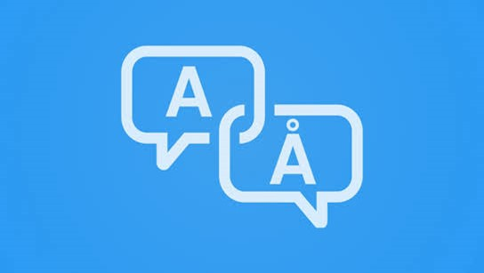

Machine Translation Tools
Machine translation tools like Google Translate help users translate text in real-time. They are essential for quick translations of phrases and sentences across many languages.
Machine translation tools like Google Translate help users translate text in real-time. They are essential for quick translations of phrases and sentences across many languages.
Language tutoring tools such as Duolingo, Rosetta Stone, and Babbel offer structured language lessons with personalized feedback, making language learning accessible and interactive.
Language generation tools, including platforms like GPT-3, generate text based on prompts. These tools are used for creating conversational agents and more complex language models.